ESP8266-NodeMCU开发板
ESP8266-NodeMCU开发板详解
NodeMCU是一个开源的IoT物联网硬件开发板，由于它支持WIFI功能且使用方法十分类似Arduino开发板，所以近些年获得了越来越多来自全世界的创客朋友们的青睐。NodeMCU尺寸与Arduino Nano类似。它并不是Arduino团队开发的，但是我们也可以使用Arduino IDE 对它进行开发。而且它还有一颗地道的“中国芯”—ESP8266模块。所以无论在性能还有价格上，我们太极创客团队都认为NodeMCU是更值得创客朋友们在物联网开发上花更多的时间来学习和使用的。
作为万物互联的IoT基础，首先物联网控制板的成本不能过高。高昂的物联网控制元件不利于项目成本控制也不利于广大创客爱好者学习和使用它。在这一点上，NodeMCU比树莓派以及Arduino家族的IoT平台等更具优势。
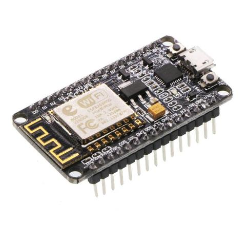
ESP8266和NodeMCU
细心的朋友可能已经发现了，在我们的网站里，ESP8266和NodeMCU这两个名字经常一起出现。然而在其它的网站或资料中，有时是用ESP8266有时是用NodeMCU。那么ESP8266和NodeMCU之间是什么关系呢？
ESP8266是一块芯片，如下图所示。
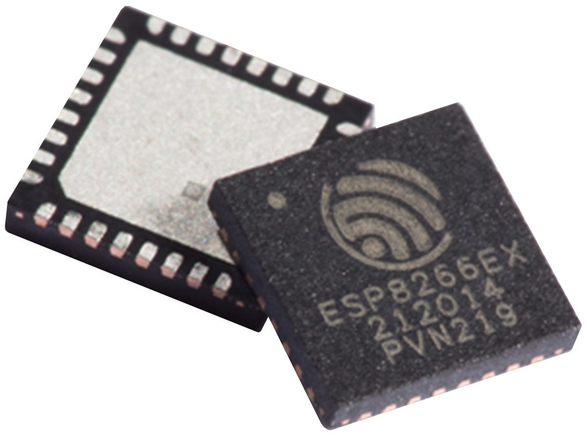
而NodeMCU则是以ESP8266芯片为核心的开发板，如下图所示。
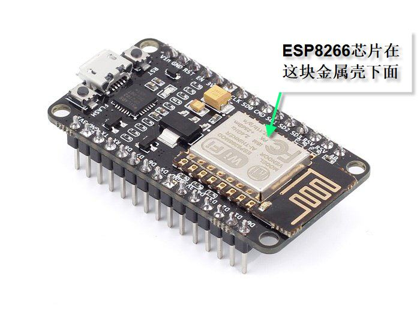
我们知道，要想对ESP8266芯片来进行实验操作是很困难的，因为我们很难将小小一枚芯片上的引脚与我们的电脑连接起来然后再进行上传程序等操作。于是便诞生了围绕ESP8266芯片的各种开发板。NodeMCU就是这些开发板中的一员。
NodeMCU开发板上的两排插针与ESP8266芯片的引脚相连。有了开发板上的两排插针，我们就可以很轻松的使用杜邦线将芯片的引脚接到实验电路中。NodeMCU开发板上还配有USB接口以及电压转换电路。这些为我们提供了很大的便利。我们只要用一根USB数据线就可以轻松的实现为ESP8266供电以及上传程序的操作。当然，NodeMCU开发板上的电路功能还不止这些，我就不再继续延伸下去了。不过说了这么多，还是请您务必记住一点， NodeMCU开发板上的两排插针与ESP8266芯片的引脚是连在一起的。这一知识点在本节后续的学习中还会用到。
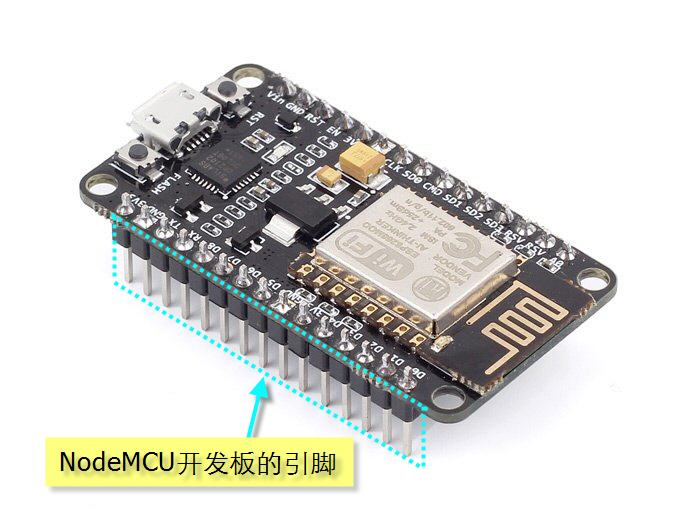
市面上销售的配有ESP8266芯片的开发板有很多种。比较流行的有SparkFun ESP8266 Thing、Adafruit Feather HUZZAH with ESP8266、Node MCU等。
通过对这些开发板的软件、硬件、配置、价格、易用性等方面综合比较，我们太极创客团队最后决定在这套教程中使用NodeMCU开发板来学习物联网开发。
数字输入输出引脚（GPIO）
如下图所示，ESP8266芯片四周分布很多引脚。这些引脚大部分可用作输入输出使用。这些用作输入输出的引脚统称为GPIO。
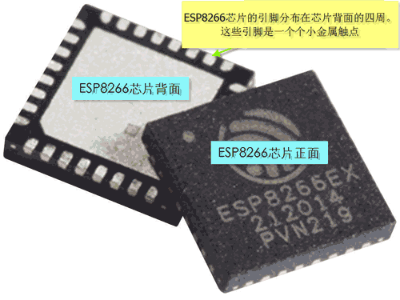
ESP8266芯片的GPIO引脚可用作数字输入来读取引脚电平，也可用作数字输出向外围电路发出控制信号。在这一点上，GPIO引脚与Arduino开发板的引脚功能十分类似。（请注意，我在这里用的是类似而不是相同。因为GPIO引脚与Arduino开发板引脚还是存在着很多不同的。）
当引脚以数字输出模式工作时，低电平是0V (灌电流)，高电平是3.3V (拉电流)。
请注意:ESP8266芯片与Arduino Uno/Mega/Nano等开发板的引脚电平电压有所区别。Arduino开发板的高电平是+5V，低电平是0V。
GPIO编号与NodeMCU开发板引脚名的区别
请留意：在很多介绍ESP8266以及NodeMCU的资料里会出现两种引脚命名方法。一种是GPIO编号，一种是NodeMCU引脚名。请注意这两者是不同的，请千万不要混淆。
GPIO编号指的是ESP8266芯片的引脚编号如下图所示：
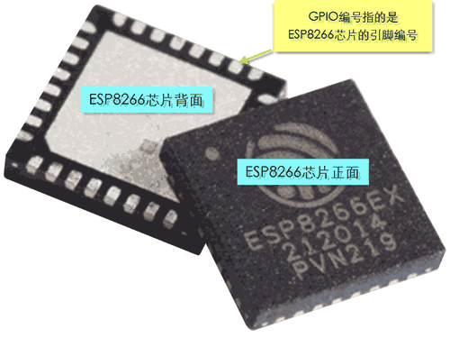
而NodeMCU引脚名指的是电路板上印刷的引脚名称。如下图所示
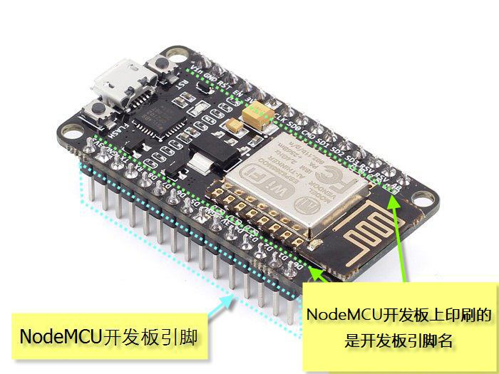
本教程中“GPIO编号”这一名称指代的是ESP8266芯片的引脚编号。我们会以“GPIO + 数字”这一格式来指代，如GPIO2, GPIO16…
NodeMCU开发板的引脚名指的是开发板上印刷的文字。通常这些引脚名都是一个字符接一个数字的组合，如：D0、D1、A0… 我们会用“开发板引脚”或直接使用“引脚”来表示它们。
简而言之，只要您看到GPIO这几个字母，就说明是芯片引脚，而没有GPIO这几个字母，那肯定是指开发板引脚。
ESP8266 GPIO编号与NodeMCU开发板引脚名的对应关系
在本节教程开始的地方我曾经跟大家讲过，ESP8266芯片的GPIO与开发板的引脚是连在一起的。但是GPIO与开发板引脚又是如何相互连接的呢？这个问题的答案就在下面的说明图中。

在以上图片中深蓝底白色字的标识就是GPIO引脚编号。如“GPIO4”。而开发板上所印刷的D2,D3等等就是NodeMCU开发板引脚名称。如下图所示。
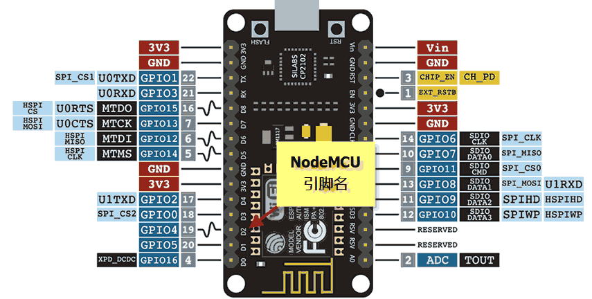
如下图所示，NodeMCU的D2引脚是与GPIO4相互连接的。以此类推，通过以下说明图您就可以找到D2与GPIO的对应关系了。
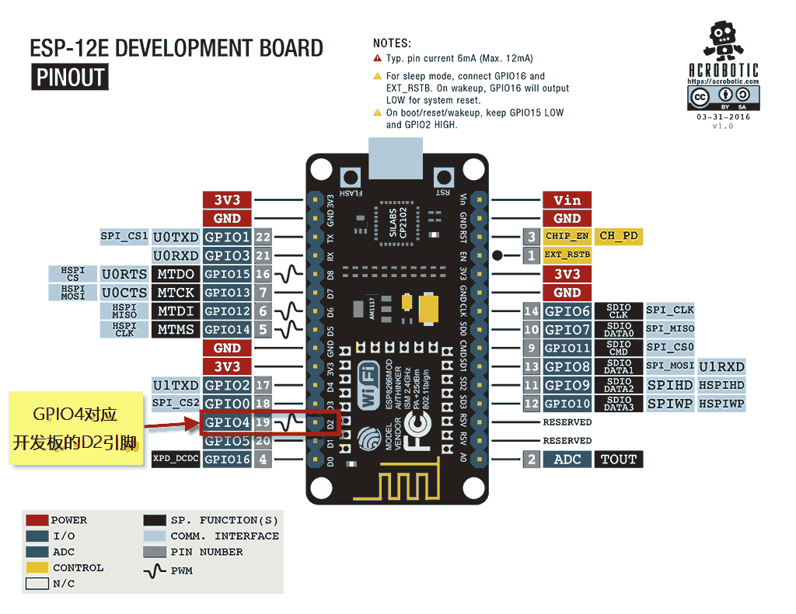
那么，我们为什么要花这么多时间讲解开发板引脚名和GPIO号的对应关系呢？
将来我们在编写NodeMCU开发板的控制程序时，经常会进行引脚操作。如以下程序语句。
digitalWrite(D4, HIGH);以上语句通过digitalWrite函数将引脚4设置为高电平。那么您知道这个数字4到底是指GPIO4还是指开发板D4引脚呢？
答案是GPIO4而不是D4。
通过下面这个GPIO编号与开发板引脚对应图我们不难看出。以上语句实际是将NodeMCU开发板的D2引脚设置为高电平。因为D2对应的时GPIO4。如下图所示：

如果要对D2引脚设置为高电平，您可以使用以下语句。
digitalWrite(D2, HIGH);可用引脚
ESP8266芯片有17个GPIO引脚（GPIO0～GPIO16）。这些引脚中的GPIO6～GPIO 11被用于连接开发板的闪存（Flash Memory）。如果在实验电路中使用GPIO6～GPIO11，NodeMCU开发板将无法正常工作。因此建议您不要使用GPIO6～GPIO 11。
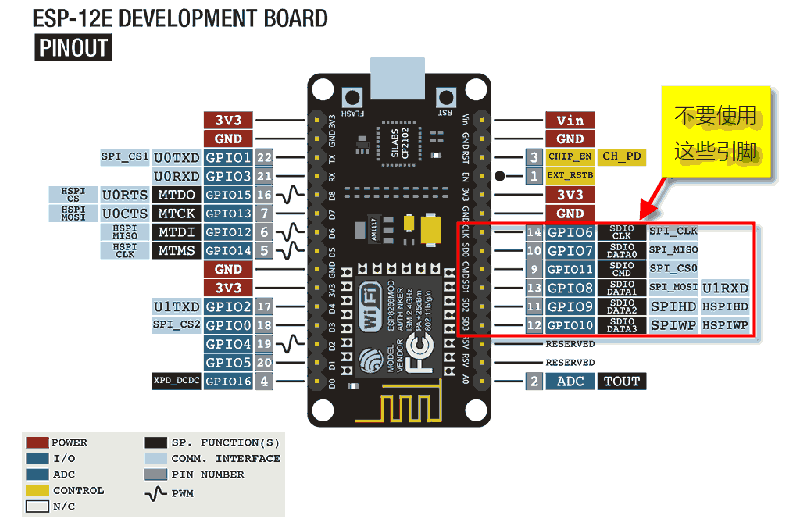
ESP8266的GPIO6-GPIO11用于连接闪存，因此不建议使用这些引脚。
电压电流限制
NodeMCU开发板引脚的输入输出电压限制是3.3 V。如果向引脚施加3.6V以上的电压就有可能对芯片电路造成损坏。同时请注意，这些引脚的最大输出电流是12mA。
由于NodeMCU开发板的引脚允许电压和电流都是低于Arduino开发板的引脚，所以如您想要将NodeMCU与Arduino引脚相互连接，请特别注意这两个开发板的引脚电压和电流的区别。如果操作不当可能会损坏NodeMCU开发板。
特殊引脚情况说明
GPIO2引脚 在NodeMCU开发板启动时是不能连接低电平的。
GPIO15引脚在开发板运行中一直保持低电平状态。因此请不要使用GPIO15引脚来读取开关状态或进行I²C通讯。
GPIO0引脚在开发板运行中需要一直保持高电平状态。否则ESP8266将进入程序上传工作模式也就无法正常工作了。您无需对GPIO0引脚进行额外操作，因为NodeMCU的内置电路可以确保GPIO0引脚在工作时连接高电平而在上传程序时连接低电平。
上拉电阻/下拉电阻
GPIO 0-15引脚都配有内置上拉电阻。这一点与Arduino十分类似。GPIO16 引脚配有内置下拉电阻。
模拟输入
ESP8266 只有一个模拟输入引脚（该引脚通过模拟-数字转换将引脚上的模拟电压数值转化为数字量）。此引脚可以读取的模拟电压值为 0 – 1.0V。请注意：ESP8266 芯片模拟输入引脚连接在1.0V以上电压可能损坏ESP8266芯片。
以上所描述的是针对ESP8266芯片的引脚。而对于NodeMCU开发板引脚，情况就不同了。
NodeMCU开发板配有降压电路。您可以用NodeMCU开发板的模拟输入引脚读取0-3.3V的模拟电压信号。
通讯
串行端口
ESP8266有2个硬件串行端口（UART）。
串行端口0（UART0）使用GPIO1和GPIO3引脚。其中GPIO1引脚是TX0，GPIO3是RX0。
串行端口1（UART1）使用GPIO2和GPIO8引脚。其中GPIO2引脚是TX1，GPIO8是RX1。请注意，由于GPIO8被用于连接闪存芯片，串行端口1只能使用GPIO2来向外发送串行数据。
I²C ESP8266只有软件模拟的I²C端口，没有硬件I²C端口。也就是说我们可以使用任意的两个GPIO引脚通过软件模拟来实现I²C通讯。ESP8266的数据表（datasheet）中，GPIO2标注为SDA，GPIO14标注为SCL。
SPI ESP8266的SPI端口情况如下：
GPIO14 — CLK GPIO12 — MISO GPIO13 — MOSI GPIO 15 — CS(SS)
ESP8266引脚功能一览
GPIO |
功能 |
状态 |
限制 |
0 |
引导模式选择 |
3.3V |
无Hi-Z |
1 |
TX0 |
– |
串口通讯过程中不能使用 |
2 |
引导模式选择 TX1 |
3.3V |
启动时不能接地 启动时发送调试信息 |
3 |
RX0 |
– |
串口通讯过程中不能使用 |
4 |
SDA (I²C) |
– |
– |
5 |
SCL (I²C) |
– |
– |
6 – 11 |
连接闪存 |
x |
不可用 |
12 |
MISO (SPI) |
– |
– |
13 |
MOSI (SPI) |
– |
– |
14 |
SCK (SPI) |
– |
– |
15 |
SS (SPI) |
0V |
上拉电阻不可用 |
16 |
睡眠唤醒 |
– |
无上拉电阻，仅有下拉电阻 连接 RST 引脚实现睡眠唤醒 |
相关互联网知识基础-TCP/IP协议簇
在网络系统中，为了保证通信设备之间能正确地进行通信，必须使用一种双方都能够理解的语言，这种语言被称为“协议”。
TCP/IP协议簇是Internet的基础，也是当今最流行的组网形式。TCP/IP是一组协议的代名词。
TCP/IP协议被划分为4层，分别是：
分层名称 |
包含协议 |
应用层 |
HTTP, FTP, mDNS, WebSocket, OSC … |
传输层 |
TCP, UDP |
网络层 |
IP |
链路层（也称网络接口层） |
Ethernet, Wi-Fi … |
参见：
互联网知识基础-链路层：
链路层的主要作用是实现设备之间的物理链接。举例来说，我们日常使用的WiFi就是链路层的一种。
ESP8266利用WiFi联网时有三种工作模式。
模式1 – 无线终端模式（Wireless Station） 如下图所示，ESP8266可通过WiFi连接无线路由器。这与用您的手机通过WiFi连接无线路由器的模式相同。
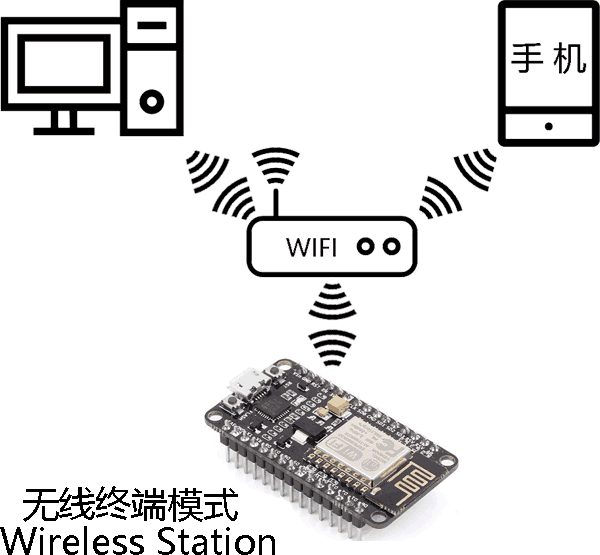
模式2 – 接入点模式（Access Point, 也称 AP）
ESP8266也可以建立WiFi网络供其它设备连接。当ESP8266以此模式运行时，我们可以使用手机搜索ESP8266所发出的WiFi网络并进行连接。
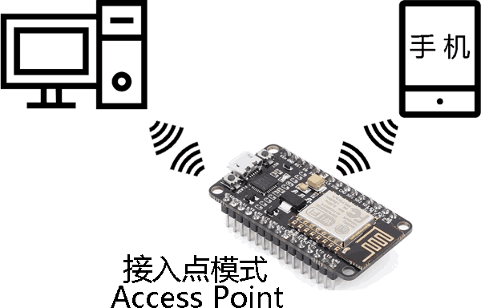
模式3 – 混合模式（Wireless Station + AP）
所谓混合模式即以上两种模式的混合。
以上几种工作模式将会在后续的教程中做详细介绍，这里您只需要对这些模式具备初步认识就好了。
互联网知识基础-网络层
网络层与IP协议
尽管设备可以通过链路层联网，但是光有链路层还无法实现设备之间的数据通讯。因为网络设备没有明确的标识。网络设备无从知晓要向谁传输数据，也无法确定从何处获取数据。
这很像我们在网上购物时需要把收货地址提供给商家。有了这个地址，商家才知道向哪里发货。假如收货后我们不满意，那么商家也要提供退货地址。这样才能确保货物被返还给商家。在这里，商家和我们都有一个明确的地址，以确保货物运输的正常运行。
在网络中传输数据的过程很像刚才这个例子。每一台网络设备都有独立的地址，数据在这些独立的地址间实现传输。但是网络设备的地址是什么呢？很多人都听过这个名字，它叫IP地址。
网络层主要作用是通过IP协议为联网设备提供IP地址。
有了IP地址还不够，因为要确保网络中所有设备IP地址不重复，还需要DHCP (Dynamic Host Configuration Protocol) 服务器来实现这一功能。
当网络中所有设备都有了独立的IP地址后，设备之间就可以收发数据了。
IPv4 / IPv6
IP协议有两个版本，分别是IPv4和IPv6。IPv6是IPv4的升级版本，因为IPv6可以为更多的网络设备提供独立的IP地址。在本教程中，我们将着重讲解IPv4，因为大多数网络系统仍在使用IPv4。
IPv4版本的IP地址由4个数字组成，如 192.168.0.200 这个IP地址由两部分组成。其中前三个数字（192.168.0）是设备所连接的本地局域网络地址（也称子网地址）。而最后一个数字200是该设备在本地局域网络中的地址编号。
举例来说，我们有一个手机，一台电脑和一个NodeMCU开发板。如下图所示，现在我们将这三台设备同时连接到家中的WiFi路由器。家中的WiFi路由器会通过它内置的DHCP服务器功能为这三台设备分配一个独立的IP地址。假设我们的NodeMCU IP地址是192.168.0.2，手机是192.168.0.3，电脑是192.168.0.4。到这里，我们的手机，电脑和NodeMCU就可以使用各自的IP地址彼此收发数据了。
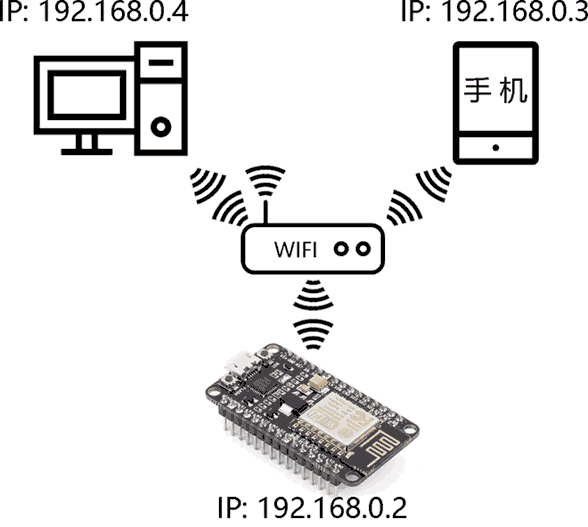
子网掩码(Subnet Mask)
与网络设备相同，网络本身也有自己的地址。
如果我们将网络与网络叠加就可以编织成一张无限大的网，而组成这张大网的每一个小网都可以被称作子网络。通常我们家中的网络是不需要多个子网络的。但是对于大型企业或工业项目，由于联网设备数量很大，一个子网无法满足需求。这时我们就可以将多个网络连接在一起形成一张巨型网络。那么当这些子网组成“大网”后，为了便于网络管理，我们为每一个组成大网的子网络都分配一个独立的地址，这个地址就是子网地址。
那么子网地址长什么样呢？其实您已经见过它了。它就在网络设备的IP地址里面。我们再来看一看刚刚给您举得这个例子。请看下图：
在以上的例子里，我们可以看到这三台设备的IP地址都有一个共同点。他们的IP地址前三位数字都是相同的，即192.168.0。这就是子网地址。同时请注意，这三台设备的IP地址最后一个数字是不同的。而这最后一个数字就是这三台设备在网络中的独立序号。
那么问题就来了，对于一个IP地址来说，是不是总是前三个数字是子网地址，而最后一个数字是设备序号呢？ 不是的。
到这里可能有的朋友会感到困惑了。一个IP地址中，到底哪一部分是子网地址，而哪部分是该设备在子网中的设备序号呢？
这就要用到子网掩码了。
在以上示例中，我们的IP地址前三位是子网地址，这是因为我们在对网络设备进行设置的时候，预先设置好子网掩码是 255 . 255 . 255 . 0。可以看到，这个子网掩码也是由4个数字组成的。而且这个子网掩码中只有255和0 这两种数字。而255所在的位置是前3位，最后一位是0。
为了便于您理解子网掩码的概念，我们再把刚才的例子找出来。在这个例子里，这三台网络设备的IP地址唯一区别就是最后一个数字。
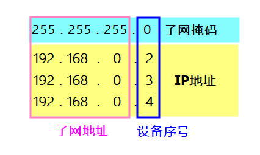
也就是说，这几台设备的IP地址相同部分对应子网掩码是255的部分，而设备IP地址不同的部分对应子网掩码0。
这就是子网掩码的基本工作原理了。我们用255这个数字标出IP地址的哪一部分是子网地址。而用0这个数字来表示IP地址的哪一部分是设备部分。
到这里，我们也就基本上理解了子网掩码的基本工作原理。请注意，我在这里一直强调基本二字。这是因为子网掩码的工作原理比以上所讲述的要复杂。然而具体子网掩码是如何发挥作用的，这已经超出了这篇教程的范围。所以我们就点到为止了。关于子网掩码，假如您想要进行更深入的学习，可以参考其它的网络资源，这个知识点的教程资源还是很丰富的。
MAC地址（Media Access Control Address）和ARP(Address Resolution Protocol)
网络设备间要想实现通讯，设备之间不光要知道彼此的IP地址，还要知道设备的MAC地址（也叫MAC码）。
网络中的每一个设备都有一个独立的MAC地址。这个MAC地址是固化在网络设备硬件中的。我们可以通过系统设置或工具软件改变MAC地址，但这也仅仅是临时的修改，而不是真正将设备硬件的MAC地址进行永久性的更改。如果想永久性的修改MAC地址，那就要借助硬件产商所提供的工具软件了。
为了说明MAC地址的用途，我们还是用刚刚的网络示例。如下图所示：

假如我们的ESP8266想要发送数据给网络中的手机， 首先ESP8266要知道手机的IP地址是192.168.0.3。除了这个信息以外，ESP8266还要知道手机的MAC地址。
现在问题就来了，如果ESP8266和手机都是刚刚连入WIFI的， 它们从来没有互相通讯过，因此它们是不可能知道彼此的MAC地址。这可怎么办?
要想解决这个问题，ESP8266会向网络中的所有设备广播一条“寻人启事”。这条广播信息的内容大概是这样的。“各位网络中的兄弟姐妹，我是住在IP地址192.168.0.2的设备。我的MAC码是AB-CD。我现在要发送数据给住在IP地址192.168.0.3的设备。请192.168.0.3地址的设备告知你的MAC码。” （注意：现实中的MAC码肯定不是AB-CD这 4个字母构成的。这里为了便于您的理解而将MAC地址进行了简化。）
如果手机听到了这条广播就会回复一条信息给ESP8266，大概的信息是这样的：“你好！我是住在192.168.0.3的设备。我的MAC码是EF-GH。”发送这条信息的同时，手机也会把ESP8266所拥有的IP地址以及MAC码记录下来，以备后用。
到这里，ESP8266和手机就彼此知道了对方的IP地址和MAC码了。接下来他们就可以愉快的网络通(Liao)讯(Tian)了。这种让两台完全不认识彼此的设备获取到对方IP和MAC地址的协议就是ARP了。
互联网知识基础-传输层
网络设备通讯时，数据丢失和数据受损的情况经常出现。传输层的 TCP（Transmission Control Protocol）和UDP（User Datagram Protocol）协议可以用来解决这一问题。通常我们会选择这两种协议中的一种来保证数据传输的准确性。具体选择哪一种协议要看我们使用的是何种网络应用。因为不同的网络应用对于数据的传输要求是不同的。
举例来说，对于网络游戏而言，我们对数据的传输速率要求很高。因为玩家在发出了一个游戏控制指令后，这个指令需要以最快的速度传送给游戏服务器。如果传输速度跟不上，游戏体验将会大打折扣。相反，有一些网络应用对数据传输速度要求较低，但是对数据传输的准确性要求是极高的。比如电子邮件应用。当我们发出电子邮件以后，通常我们不太介意这封邮件的传输速度。邮件可以是1分钟后送达，也可以是10分钟后送达。这没有什么影响。但是邮件的信息内容是绝对要保证准确的。
这就引出了TCP和UDP这两种协议的应用范围。
TCP协议可以更好的保证数据传输的准确性，但是传输速度比UDP协议而言要慢一些。TCP协议的特点是可以保证所有数据都能被接收端接收，数据的传输顺序也不会被打乱，而且如有数据损坏则重发受损数据。基于以上功能特点，TCP通常用于电子邮件及文件上传等。
UDP协议并不能保证所有数据都被接收端所接受。一旦出现数据受损的情况，UDP协议将会抛弃受损的数据。这些数据一旦被抛弃将会永久性的消失，发送端不会因为数据受损而重新发送。因此UDP协议远不如TCP协议可靠。但是既然是这样，为何还有人会选择UDP协议呢？这是因为UDP比TCP速度快。因此UDP协议通常用于网络游戏以及语音聊天或视频聊天应用。
互联网知识基础-应用层
传输层可以实现设备间的数据传输。但发送端和接收端还需要一种协议来理解这些传输信息的含义。这就引出了即将给您介绍的应用层。
HTTP协议 应用层中有很多种协议，最常见是HTTP协议。它常被用来传输网页数据。我们这篇教程也将着重介绍HTTP协议。
HTTP协议由请求和响应构成。也就是说，HTTP的工作模式很像是一问一答。
HTTP请求
举例来说，当您在浏览器输入www.taichi-maker.com这一网址并按下回车，这时候浏览器会把这一操作转换成一个HTTP请求。
这个HTTP请求主要分为两大部分。一部分是请求头（Request Header）一部分是请求体（Request Body）。对于我们学习物联网知识来说，请求头是我们重点要关注的内容。而请求体的知识已经超越这篇教程的范围，抱歉我就不在这里详述了。
请看以下是简化后的请求头内容：
GET / HTTP/1.1 Host: www.taichi-maker.com
在以上的HTTP请求中:
“GET” 是一个读取请求。也就是请求网站服务器把网页数据发送过来。
“/” 的作用就是要告诉网站服务器，我这个读取请求的内容是网站根目录下的内容。换句话说，就是请求服务器把网站首页的网页数据发过来。
“HTTP/1.1” 是指请求所采用的HTTP协议版本是1.1。
“Host: www.taichi-maker.com”表示请求的域名是 www.taichi-maker.com 也就是太极创客网站的域名。
以上是HTTP协议的 GET 请求中最关键的内容。在 HTTP 协议中，GET只是诸多请求方法中的一种。以下是HTTP协议中的其它请求方法：
HTTP1.0定义了三种请求方法： GET, POST 和 HEAD方法。 HTTP1.1新增了五种请求方法：OPTIONS, PUT, DELETE, TRACE 和 CONNECT 方法。 关于请求方法，我们这里主要介绍的只有GET。其它的请求方法已经超越了我们这个教程的范围，就不在这里继续深入讲下去了。感兴趣的话，您可以通过互联网找到这方面的教程资源。
HTTP响应
接下来我们再看一看浏览器发送以上HTTP请求后，接收到的服务器HTTP响应。HTTP响应内容也是分为两个部分，一部分是响应头（Response Header）一部分是响应体（Response Body）。其中响应体部分是可选项，也就是说有些HTTP响应只有响应头，而响应体是空的。
我们先来给大家介绍响应头部分。
由于响应头信息量比较大，我们还是选出主要内容给大家讲解。如下所示：
HTTP/1.1 200 OK Content-Type: text/html; charset=UTF-8
“HTTP/1.1”这个信息我们刚刚在HTTP请求部分中介绍过。它的含义就是此HTTP响应所采用的协议版本是1.1。
“200”这个代码可能有些朋友会感觉陌生。但是如果我说起“404”这个数字可能大家会感到更熟悉吧？无论是200也好还是404也好，这些都是HTTP响应状态码。它的作用是以代码的形式表达服务器在接到请求后的状态。“200”代表服务器成功找到了请求的网页资源（这一点大家在后面的OK中也已经体现出来了）。 “404”代表服务器无法找到请求的网页资源。：
以下是常见的服务器状态码：
100~199：成功接收请求，要求客户端继续提交下一次请求才能完成整个处理过程。
200~299：成功接收请求并已完成整个处理过程。常用200
300~399：完成请求，客户需进一步细化请求。
400~499：客户端的请求有错误，常用404和403(403的含义是权限不够，服务器拒绝访问。)
500~599：服务器端出现错误，常用500
“Content-Type” 指示响应体的内容是什么类型。这里的响应体内容类型是“text/htm”，即网页HTML代码。通过这一行响应头信息，我们的浏览器将会知道，在这一个响应中的响应体部分都是HTML网页代码。于是浏览器将会做好准备，将网页代码翻译成我们人类容易读懂的格式并且呈现在浏览器中。 我们再举一个例子，假设某一个响应头中“Content-Type” 类型是”image/jpeg”。这就意味着该响应体中的信息是一个jpeg格式的图片，那么浏览器也就会按照jpeg的解码方式将图片呈现在我们的面前。
在以上示例中，我们使用互联网浏览器来讲解HTTP的请求和响应。当我们使用NodeMCU来开发物联网项目时，发出HTTP请求的就不再是浏览器而是NodeMCU开发板了。而读取这些响应请求的也将是NodeMCU开发板。那么，究竟如何让NodeMCU发出HTTP请求，而NodeMCU又是如何解读HTTP响应呢？这些都依赖于我们为NodeMCU开发的控制程序。这些内容会在后续的教程里给大家详细介绍。
DNS（Domain Name System/域名系统） 在之前的教程中，我曾经给大家讲过网络中的所有设备都具有独立的IP地址。这一点对于网站服务器来说也不例外。当我们使用浏览器访问某一个网站时，实际上我们是通过浏览器向网站服务器发送HTTP请求。然而网站服务器的IP地址很难记忆，比如太极创客网站的域名由两个单词组成，taichi是太极，maker是创客。这很好记，但是要想记住太极创客服务器的IP就没那么容易了。因为那是4个毫无规律的数字。
为了解决IP地址不好记这一问题，DNS被派上了用场。
我们可以把DNS看作是一个巨型电话本。电话本中的联系人一栏就是网站的域名，而电话本中的电话号码一栏则是这些网站的IP地址。有了DNS我们就可以使用简单易记的域名来访问网站了。
还是用太极创客网站来举例吧，每当我们在浏览器中输入域名www.taichi-maker.com并按下回车后，这时浏览器首先会向DNS服务器发送请求，请求的内容大致如下：“亲爱的DNS服务器，我那个明明可以靠脸吃饭却偏偏要学物联网的主人想访问一个域名是www.taichi-maker.com的网站。麻烦您把这个域名的网站服务器IP地址告诉我好吗？” DNS服务器在接收到这一请求后，会做出以下应答：“亲爱的浏览器，您要的网站服务器ip地址是 12 . 34 . 56 . 78。” 浏览器在接收到这一IP地址后，就开始向这个IP地址所对应的网站服务器正式发出HTTP GET请求了。